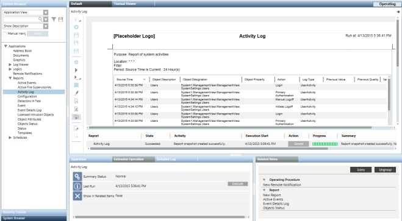

Run Mode
The Run mode executes a Report Definition and displays the data retrieved from Reports and other services. Following are the characteristics of the Run mode:
- The ribbon disappears.
- Keywords are replaced by actual data.
- No element can be added or deleted in this mode.
- The layout elements are populated with data.
- You can perform the following activities:
- Sorting (ascending or descending) or changing column width.
- Selecting rows in tables.
- Entering text in the Editable Field control.
- Selecting text entries from the Custom Text Selection control or values of a text group from the Text Group Selection control.
- Adding, modifying, and deleting comments from the Comments table.
- The Stop icon or the Stop button in the Report Management section stops the execution of a Report Definition.
- In Run mode, when you move the cursor over a table/plot, a tooltip displays the applicable filter and the number of records (only for tables).
The number of records tooltip is helpful in deciding the destination type, for example, Printer. - You can toggle to Edit mode by clicking Edit
 on the Reports toolbar.
on the Reports toolbar.
If you perform sorting in Run mode and then switch to Edit mode, the Select Edit Option dialog box displays asking whether you want to save or discard the changes
you made in the Run mode, or to create a new Report Definition based on the changes.


NOTE:
Navigate to Control Panel > Clock and Region > Region, and select the Formats tab. You can configure local settings for the following fields:
- Short date
- Short time
Navigate to Control Panel > Clock and Region > Region > Additional settings, and select the Numbers tab. You can configure local settings for the following fields:
- Decimal symbol
- No. of digits after decimal
The display of resolution for all reports except the Objects report, is determined by the value specified in the No. of digits after decimal field. In case of Objects report, the resolution specified for the specific object in the Resolution text box in the Object Configurator tab is considered. The report workspace specifications, such as page size/margin or table width/height, also change according to the local settings.